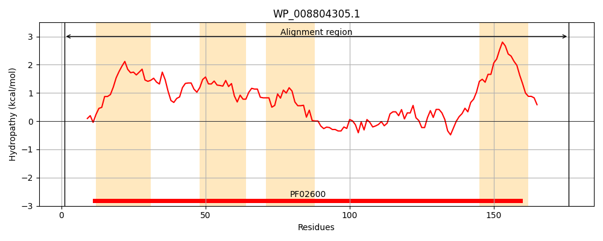
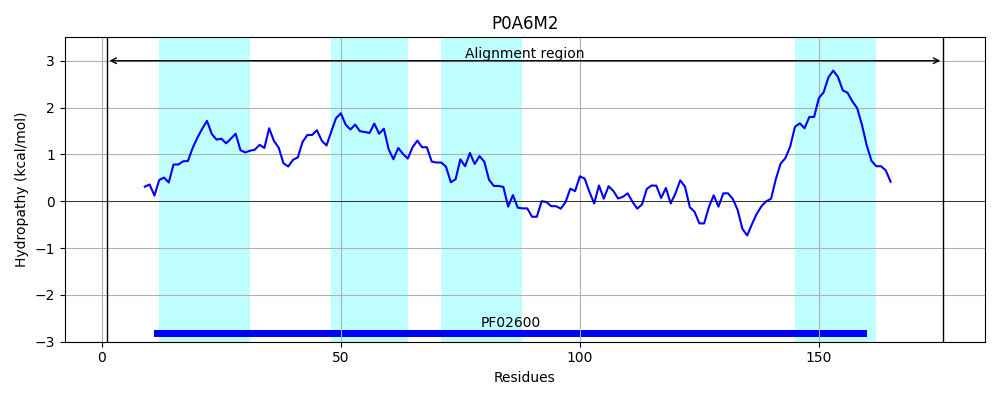
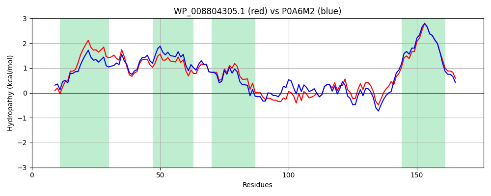

Hit Accession: P0A6M2
Hit TCID: 5.A.2.1.1
Hit Description: gnl|BL_ORD_ID|8603 gnl|TC-DB|P0A6M2|5.A.2.1.1 Disulfide bond formation protein B - Escherichia coli.
Mach Len: 176
e:0.000000
Query TMS Count : 4
Hit TMS Count: 4
TMS-Overlap Score: 3.650000
Predicted Substrates:CHEBI:10545;electron
BLAST Alignment:
Score: 808 , Bit scores: 315 bits, E-value: 4.7e-112, Alignment length: 176, Percentage identity: 81
Query: 1 MLQYLNQCSRGRGAWLLMALTAFILELVALWFQHVMLLQPCVMCIYERCALFGIMGAGLVGAIAPKTPLRYVAMVIWLYSAIRGLQLAWEHTMIQLHPSPFQTCDFAARFPTWLPLDKWLPQVFVASGDCSVRQWQFLSLEMPQWLVGIFAAYLLVAILVIIAQPFKAKKRDLFGR 176
ML++LNQCS+GRGAWLLMA TA LEL ALWFQHVMLL+PCV+CIYERCALFG++GA L+GAIAPKTPLRYVAMVIWLYSA RG+QL +EHTM+QL+PSPF TCDF RFP WLPLDKW+PQVFVASGDC+ RQW FL LEMPQWL+GIF AYL+VA+LV+I+QPFKAKKRDLFGR
Sbjct: 1 MLRFLNQCSQGRGAWLLMAFTALALELTALWFQHVMLLKPCVLCIYERCALFGVLGAALIGAIAPKTPLRYVAMVIWLYSAFRGVQLTYEHTMLQLYPSPFATCDFMVRFPEWLPLDKWVPQVFVASGDCAERQWDFLGLEMPQWLLGIFIAYLIVAVLVVISQPFKAKKRDLFGR 176 | Protein Hydropathy Plots: |
|---|
|  |  |
Pairwise Alignment-Hydropathy Plot:
|
|---|
|  |